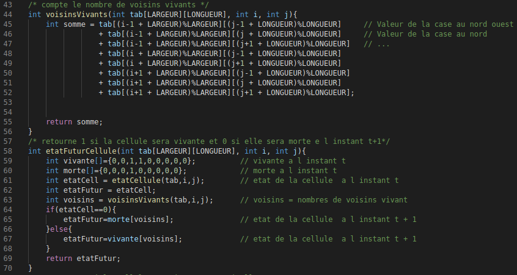
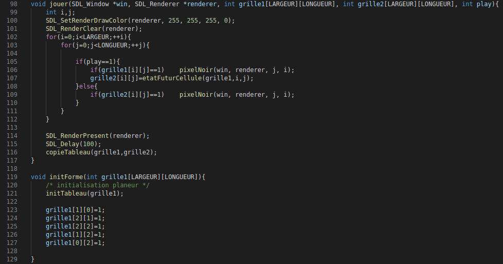
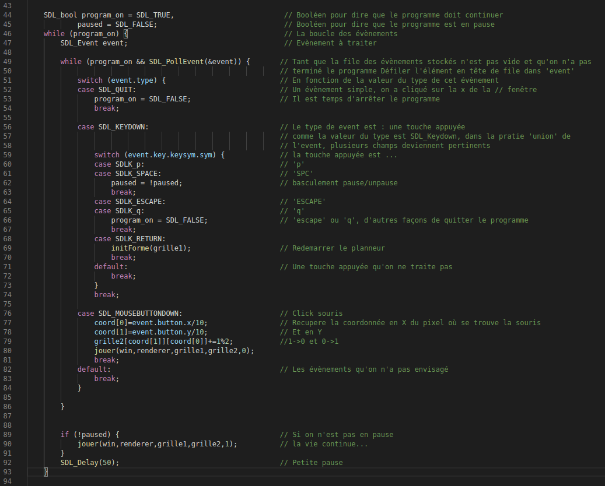

Ce mini projet a été effectué en deux étapes :
Première étape, les règles du jeu et le rendu graphique :

Une fois les règles crées, il faut que le jeu apparaisse à l'écran.

La deuxième partie est arrivée après quelques exercices.
On a la possibilité d'avoir une perssonne qui peut intéragir avec le jeu :

Possibilités :
On a fait plusieurs fichiers pour séparer les étapes, on a donc fait un makefile pour compiler :
Liens vers le fichier du code C : main.c / main.txt
Page précédante Page suivante